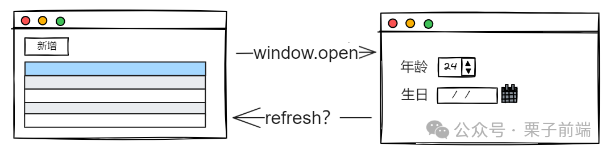
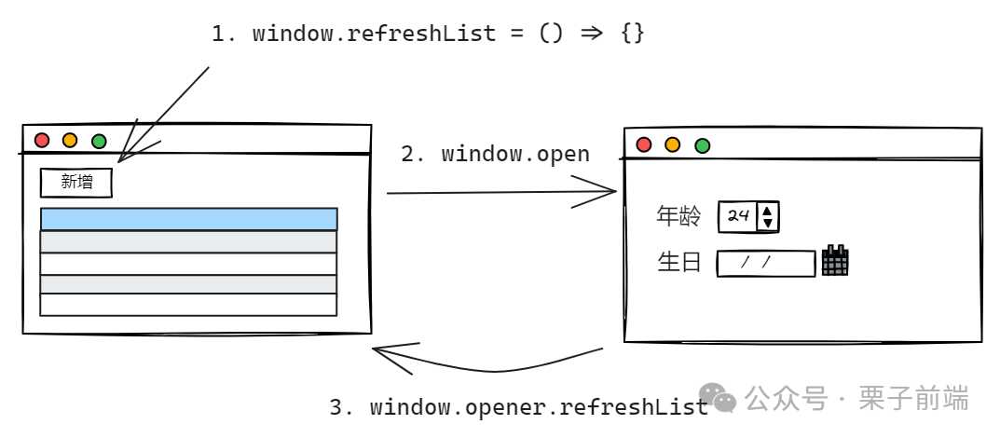
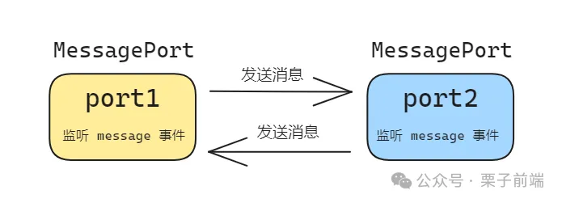

一个常规的业务列表页，页面中提供了一个新增功能，由于新增功能的表单项内容比较多，所以交互上使用新开一个窗口来完成。这时问题来了，在新增完成后，如何通知列表页面刷新列表数据，以便展示出刚才新增的那一条数据。

各位可以先自己在心中简单想想，如果让你实现这个功能，你会使用什么方案。
window.opener 代表的是打开当前窗口的那个窗口的引用，例如：在 window A 中打开了 window B，B.opener 返回 A。
有了这个引用关系，我们就可以实现跨窗口通信：

列表页设置刷新列表方法 window.refreshList = () => {}
列表页通过 window.open 或者 <a href="newUrl" target="_blank" rel="opener">新增</a> 打开新增功能页面。
用户完成新增表单填写并提交，通过调用 window.opener.refreshList 方法来刷新列表页面数据，并关闭当前页。
有人可能注意到了，在 a 标签中我们使用到了 rel="opener" 属性，为什么要设置这个属性呢？
rel 属性定义了所链接的资源与当前文档的关系，常见的属性值有：
opener: 打开的新页面 window.opener 会指向前一个页面的 window。
noopener: 和 opener 相对应， window.opener 为空。
noreferrer：打开新页面时请求头不会包含 Referer，比如你未设置 noreferrer 的情况下，从 antd 打开百度，百度页面请求头就有 Referer: https://ant.design/
nofollow: 主要用于 SEO，告诉搜索引擎忽略该链接。
主要关注 opener 和 noopener 属性，a 标签默认情况下 rel=noopener，这代表打开的新增页面的 window.opener 对象会为空，所以需要设置 rel=opener。
那么又有一个问题，为什么 a 标签默认是 rel=noopener, 因为 opener 存在安全漏洞，比如你以 opener 的方式打开了一个未知的新页面，这个新页面可以通过 window.opener.location.href = 'fake.com' 重定向你的页面。
而 window.open 默认情况下 rel=opener，故打开的新页面可以拿到 window.opener 对象，不过要是打开第三方未知网站，建议设置为 noopener, 比如 window.open('https://baidu.com', 'title', 'noopener,noreferrer')。
BroadcastChannel API 顾名思义，为“广播频道”，适用于在同一域名下的多个窗口、标签页或 iframe 之间进行实时消息广播。它的使用也非常简单，我们也看下如何通过它来实现上面的业务场景。
列表页创建一个 BroadcastChannel 实例来监听消息：
// 创建 BroadcastChannel 实例
const channel = new BroadcastChannel("myChannel");
// 监听广播通道的消息
channel.addEventListener("message", (event) => {
console.log("接收:", event.data); // { action: 'refresh' }
});
新增功能页面同样创建一个 BroadcastChannel 实例，频道名称需要和列表页一致：
// 创建 BroadcastChannel 实例
const channel = new BroadcastChannel("myChannel");
// 向广播通道发送消息
channel.postMessage({ action: "refresh" });
// 关闭频道
channel.close();
可以看到 BroadcastChannel 的使用很简单，双方创建同名频道的 BroadcastChannel 实例，然后一方监听 message 事件，一方使用 postMessage 广播内容。
对于 postMessage，我们最常用的方式应该就是当前页面和 iframe 的跨域消息通信了，其实它也能完成跨窗口通信，核心就是能拿到新窗口的 window 对象，这个在 window.opener 方案中我们就知道通过设置 rel="opener" 就可以办到。
列表页打开新窗口，并监听 message 事件：
<a href="./add.html" target="_blank" rel="opener">新增</a>
<script>
// 不同与 BroadcastChannel，这边是监听 window 上的 message 事件
window.addEventListener("message", receiveMessage);
function receiveMessage(event) {
console.log("接收:", event.data); // { action: 'refresh' }
}
</script>
新增功能页面使用 window.opener.postMessage 发送消息：
window.opener?.postMessage({ action: "refresh" }, "*");
至此我们已经完成了上面的业务需求，postMessage 的优势在于可以跨域。
MessageChannel API 允许我们创建一个新的消息通道，并通过它的两个 MessagePort 实例属性发送数据，同时它也可以跨域通信。
不同于 BroadcastChannel 的广播，MessageChannel 只提供双向通信通道，不过它既可以像 postMessage 一样用于 iframe 通信，也可以用于 Web Worker 之间进行通信。

要用 MessageChannel 实现跨窗口通信，方式有点类似 postMessage, 打开新页面时需要设置 rel="opener"。
列表页初始化 MessageChannel 实例，并在 port1 上监听 message 事件:
// 创建 MessageChannel 实例
window.messageChannel = new MessageChannel();
const port1 = window.messageChannel.port1;
// port1 监听 message 事件
port1.onmessage = function (event) {
console.log("接收:", event.data); // { action: 'refresh' }
};
新增功能页面使用 window.opener.messageChannel 拿到列表的 MessageChannel 实例，并使用 port2 的 postMessage 方法往 port1 通道上发送消息：
// 获取 MessageChannel 实例
const messageChannel = window.opener.messageChannel;
const port2 = messageChannel.port2;
// 往 port1 发送消息
port2.postMessage({ action: "refresh" });
需要注意的是 MessagePort 对象如果使用 addEventListener 监听 message 事件，就需要调用下 port.start() 方法，使用 onmessage 则可以不需要。
当 localStorage 或 sessionStorage 被修改时，将触发 storage 事件，利用这个机制，我们也可以完成跨窗口通信。同时因为用的是 localStorage 或 sessionStorage 方式，所以页面必须是同一域名下。
值得注意的是，sessionStorage 并不能满足上面的业务需求，sessionStorage 要想触发 storage 事件，必须在同一窗口，也就是一般只在当前页和其加载的同域名 iframe 下使用。还有一点就是当前页的 setItem 不会触发当前页的 storage 事件，只会触发其他窗口的。
列表页监听 storage 事件，判断是否是对应 key 值发生变化:
window.addEventListener("storage", () => {
console.log("发生变化的值：", event.key);
if (event.key === "refresh") {
// 刷新列表
}
});
新增功能页面使用 localStorage 的 setItem 来触发列表的 storage 事件：
window.localStorage.setItem("fresh", Date.now());
SharedWorker 是 Web Workers API 的一种扩展，它允许在多个浏览器上下文中（例如多个页面或多个 iframe ）共享一个 Worker。ShareWorker 遵守同源策略，也就是必须在同一域名下使用 SharedWorker。
先写个 worker.js 脚本：
const ports = [];
onconnect = function (e) {
const port = e.ports[0];
ports.push(port);
port.onmessage = function (e) {
console.log("worker接收到的消息：", e.data);
ports.forEach((p) => {
p.postMessage(e.data);
});
};
};
列表页创建 ShareWorker 实例，然后监听 message 事件：
const sharedWorker = new SharedWorker("./worker.js", "test");
const port = sharedWorker.port;
port.onmessage = function (event) {
console.log("接收:", event.data); // { action: 'refresh' }
};
新增功能页面使用 postMessage 发送消息给 worker，worker 在发送给各个主线程：
const sharedWorker = new SharedWorker("./worker.js", "test");
const port = sharedWorker.port;
port.postMessage({ action: "refresh" });
这样我们就完成了上述的业务需求。
上述的各种方式都可以实现通知列表页去做刷新动作，不过更推荐使用 window.opener 或 BroadcastChannel 来实现，这两种方式相对使用简单并且很符合这个业务场景。
对于其他需要跨窗口通信的场景，可以根据各个 API 的能力特点来选择使用哪个。